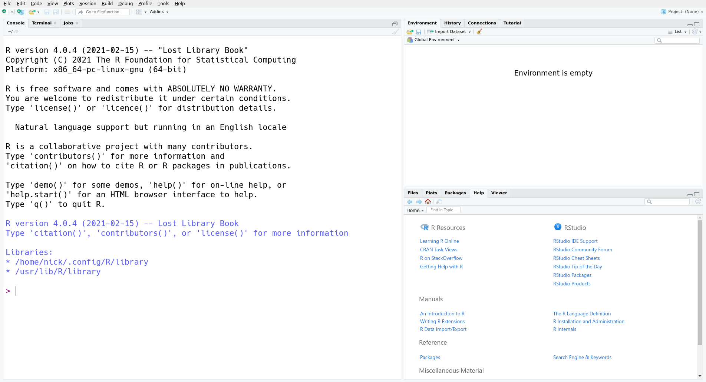

1 R Basics
R is a program for statistical computing. It provides a rich set of built-in tools for cleaning, exploring, modeling, and visualizing data.
The main way you’ll interact with R is by writing code or expressions in the R programming language. Most people use “R” as a blanket term to refer to both the program and the programming language. Usually, the distinction doesn’t matter, but in cases where it does, we’ll point it out and be specific.
By writing code, you create an unambiguous record of every step taken in an analysis. This it one of the major advantages of R (and other programming languages) over point-and-click software like Tableau and Microsoft Excel. Code you write in R is reproducible: you can share it with someone else, and if they run it with the same inputs, they’ll get the same results.
Another advantage of writing code is that it’s often reusable. This can mean automating a repetitive task within a single analysis, recycling code from one analysis into another, or packaging useful code for distribution to the general public. At the time of writing, there were over 17,000 user-contributed packages available for R, spanning a broad range of disciplines.
R is one of many programming languages used in data science. Compared to other programming languages, R’s particular strengths are its interactivity, built-in support for handling missing data, the ease with which you can produce high-quality data visualizations, and its broad base of user-contributed packages (due to both its age and growing popularity).
1.1 Prerequisites

You can download R for free here, and can find an install guide here.
In addition to R, you’ll need RStudio. RStudio is an integrated development environment (IDE), which means it’s a comprehensive program for writing, editing, searching, and running code. You can do all of these things without RStudio, but RStudio makes the process easier. You can download RStudio Desktop Open-Source Edition for free here, and can find an install guide here.
1.2 The R Interface
